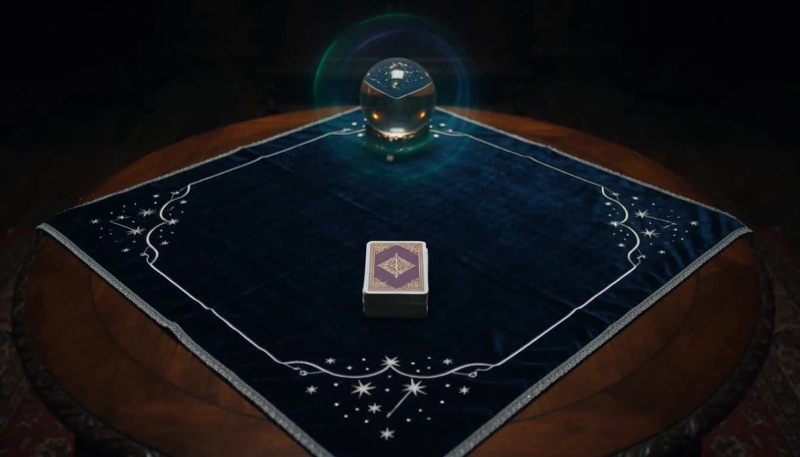

어서 오세요. 질문을 마음에 담고 카드를 골라 주세요. 카드가 준비되면 전체 흐름부터 읽고, 궁금한 부분을 한 가지씩 이야기해 봐요.
TAROT READING ROOM
내면의 거울
타로를 읽는 나만의 시간
두 가지 덱으로 카드를 펼치고, 상징과 배열의 흐름을 배워보세요.
사용할 카드 덱
조선 덱 선택됨
01 / 오늘은 무엇을 알아볼까요?
1단계 · 열린 질문(Open Question) 관점 변환
상담 주제 카테고리
스프레드(배열법) 선택
질문을 조금 더 이야기해 볼까요?
예시는 시작점일 뿐이에요. 어떤 생활 고민이든 직접 적어 주세요. AI가 연결되어 있으면 지금 상황에 맞는 질문을 하나씩 이어갑니다.

질문을 담아 카드를 골라 주세요.
78장의 카드 중 마음이 가는 카드를 직접 골라 주세요.
CLICK A CARD TO DRAW
안내자와 나누는 리딩
당신의 이야기에 카드를 비춰볼게요.
카드를 모두 고르고 뒤집으면 리딩을 시작할 수 있어요.
카드의 흐름을 읽고 있어요…
어떤 부분을 더 이야기해 볼까요?
같은 카드, 여러 가지 해석
리딩을 되짚으며 해석의 근거를 배우는 학습 모드입니다.
먼저, 카드를 펼쳐볼까요?
위에서 질문과 배열을 정하고 카드를 뽑아 뒤집으면, 각 카드의 의미와 해석 순서를 함께 살펴볼 수 있어요.
질문의 관점을 바꾸어 읽기
카드와 배열은 그대로 두고, 질문의 분야가 달라질 때 해석이 어떻게 달라지는지 비교해 보세요.
카드별 기본 뜻과 자리의 근거 다시 보기
카드의 뜻과 자리의 역할을 연결해, 왜 그렇게 해석하는지 살펴봅니다. 답변하면 그 맥락을 반영해 분석을 이어가요.
이번에는 내가 리더가 되어보기
카드 뜻 → 자리의 역할 → 카드 사이의 연결 순서로 적어보세요. 하나의 정답보다 근거 있는 해석이 중요해요.
기존 상세 리딩 · 기록 저장
03 / [전체적인 흐름] 에너지 구도 및 4대 원소 분포
4대 원소(슈트) 에너지 균형표
04 / [카드별 메시지] 포지션 심층 해석 및 도상 관찰
카드를 클릭하면 해당 포지션이 강조됩니다05 / [실천을 위한 조언] 서사 연결과 자기 성찰
주체적 선택 중심 상담 가이드
4단계 · 카드 간 서사 및 원소 상호작용
5단계 · 실행 가능한 태도 지침
내면을 비추는 성찰 질문
LOG / 나의 타로 성찰 기록함
Made by 디지털쑥쌤